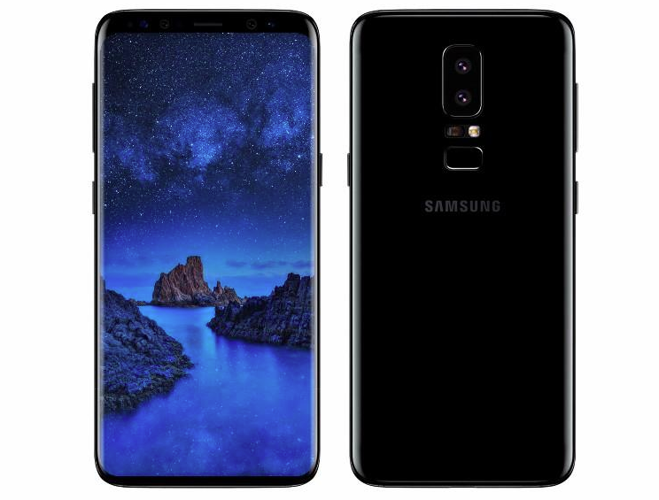
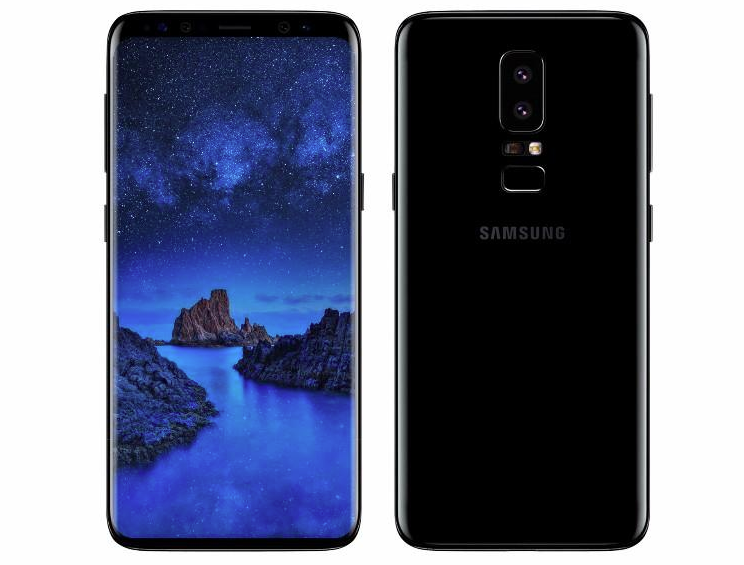

목차
역사
최초의 스마트폰은 사이먼(Symon)으로 추정된다. IBM사가 의 라스베이거스에서 열린 컴댁스에서 컨셉 제품으로 전시됨안드로이드폰
안드로이드(영어:Android)는 휴대전화를 비롯한 휴대용 장터페이스 그리고 표준 응용 프로그램(웹 브라우저, 이메일) 미디어 메세지 서비스 (MMS)등으 포함하고 있는 소프트웨어아이폰
아이폰(영어:iphone)은 2007년 1월 9일, 애플이 발표한 휴대전화 시리즈이다. 미국 샌프란시스코에서 열린 맥월드2007에서 애플의 창립자 중 한 명인 스티브 잡스가 발표했다.샘플
스마트폰 샘플 
